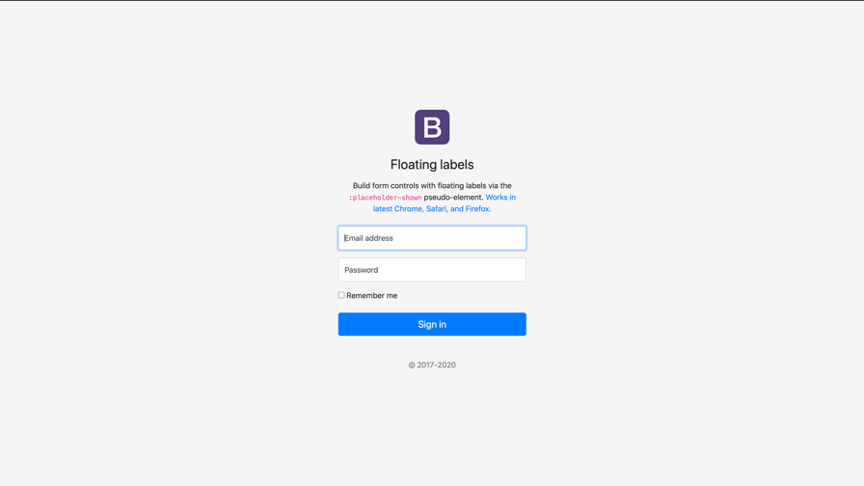

In order to do this project, i mostly inherit the idea from my project 1. Before i start the project, i start to think how many pages i am going to build. After few days of consideration, i decide to make 10 pages in my website. Half of them are mainly meant to display the work, the rest of them are either mean to introduce myself or functional page such as contact page and membership page.
Then i start to build the home page first. I get the inspiration from “https://1x.com/”, There will be the navbar at the top, one image take the half space of screen, and few thumbnails below the image. Also, i add the word “latest” and a border line in the middle of the page to make it look more professional. Moreover, each thumbnail will link to the corresponding portfolio page.
With respect to the layout of the portfolio page, i get the inspiration from album example from bootstrap. I find the button here is really useful and applicable. Because i am going to build a collection of works with different branches. The button here allows the audience to switch between categories smoothly. Also, i mean to set the color of words and title darker than usual because i don’t want views to distract much attention on words in portfolio page. As for the layout of photos, there will be two photos in each row because i think it can maximize the audience’s viewing experience.
There will be a link on each photo to the website, shows where i shoot these photos.
i get the inspiration from another wix model
Then I apply the idea from Carousel page from bootstrap. I really like this style because it is neat and clean. I mean to use way of bulletpoint to introduce myself because this method is very simple and allows the audience to know me more quickly.
The blog page i built is totally the same structure as the blog page from bootstrap. As for the membership page, i apply the floating labels page from bootstrap. I put the logo of my stuido at top. Finally, there is a space to show the detail of my logo. Also, i let the footer to be the bottom of the page because i need to keep the consistency.
As for the FAQ page, it is all text. I cited the text from 1xx.com.
The background of the home page is all black except the footer because i want the audience to pay more attention to the work itself. The white footer will not affect the experience of audience because the page will be whole black when you open it, audience will see the footer until they slide the page down. The black and white give a huge contrast feeling to audience because i want to give people a short impression about who is building this page after enjoying these works.The background of the following pages is all in white, because these pages are the mainly the content page. White color makes the audience more patient to read the text.
In order to improve the user's overall experience on the webpage, I have used a concise style for the entire webpage copy. Each webpage has its own role and is the only one. Secondly, I took the lesson from my first assignment, I optimized the overall photo size by using the software called Bridge and Photeshop , which would allow users to load the entire webpage faster.
Beside, i take the considertaion of the experience on the cellphone, i upload all the file into the cyberduck and check the website on my cellphone, i find out the old version of my footer is disordered. Then i apply the idea from wix webpage, making the footer looks more comfortable on the mobile device.